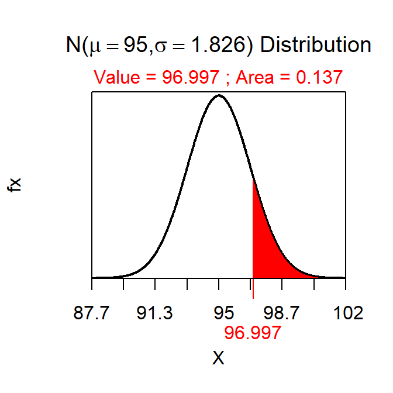

How to Reduce β
Note:
-
In question 1 below you are asked to prove that the rejection wall is at 97 (within rounding). This requires finding the value of the sample mean that has α “more extreme” (as dictated by the HA) on the “null distribution” (sampling distribution assuming that HO is true). This is always a reverse calculation and, given this HA, is a reverse-left calculation.
-
In question 2 below you are asked to prove that β is 0.137 (within rounding). This requires finding the area in the “Do Not Reject H0” region of “actual distribution” (sampling distribution assuming that μ equals the actual mean provided). This is always a forward calculation and always in the opposite direction of the reverse calculation in quation 1; thus, a forward-right calculation in this instance.
-
See Figure 1.
Figure 1: NULL normal distribution representing the rejection region for the power calculation example.
-
See Figure 2.

Figure 2: ACTUAL normal distribution representing power in the power calculation example.
-
Effects on β
-
Increasing α will DEcrease β
-
Increasing n will DEcrease β
-
Increasing σ will INcrease β
-
Increasing how wrong the H0 is will DEcrease β
-
β may be DEcreased by INcreasing n or INcreasing α.
-
Power may be INcreased by INcreasing n or INcreasing α.
R Appendix.
distrib(0.05,mean=100,sd=10/sqrt(30),type="q")
distrib(96.997,mean=95,sd=10/sqrt(30),lower.tail=FALSE)